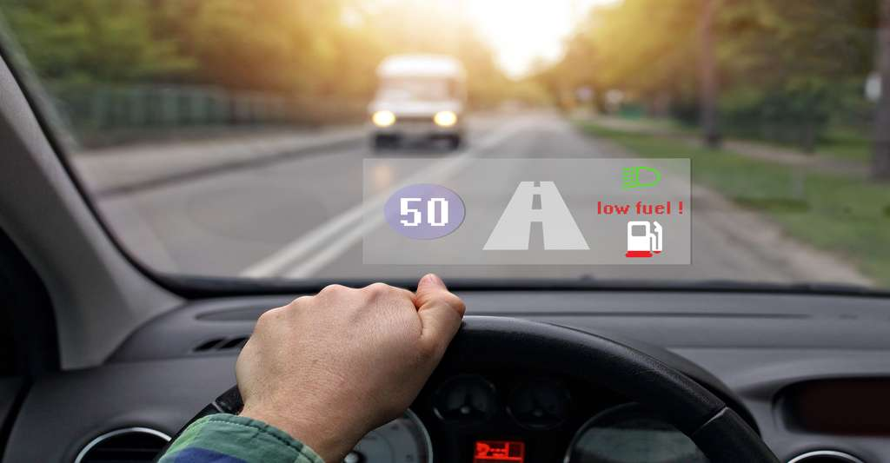
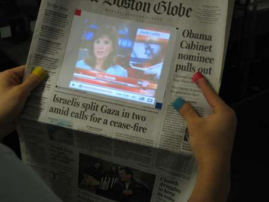
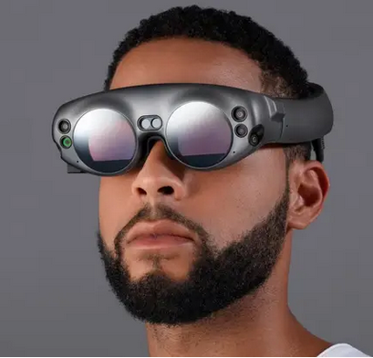
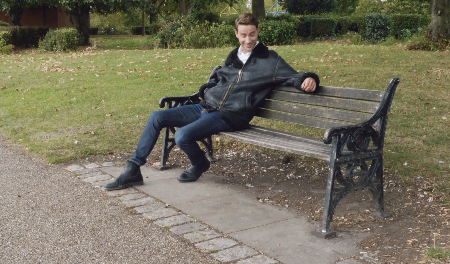

L'avenir de la Réalité Augmentée semble être radieux, on peut prendre l'exemple de la technologie "Sixth Sense" qui est encore en cours de développement même si Patties Maes a effectué une semi présentation au printemps 2019. 
Elle explique qu'à tout moment il peut exister des informations qu'on aurait envie de connaître pour prendre une bonne décision, elle donne même quelques exemples d'utilités.
Maes explique que les images peuvent être projetées contre n'importe quelle surface grâce à une petite caméra qu'on porte avec une chaîne au niveau du cou. Les mouvements pour interagir avec les images projetées seront reconnus avec une bague placée sur les doigts ou sur les ongles. L'utilisateur peut se déplacer sur une carte géographique projetée sur le mur ou opérer un zoom dessus. Une même série de gestes entraîne la prise d'une photo.
C'est au niveau des applications de réalité augmentée que Sixth Sense se distingue. Dans la simili présentation on voit une personne se rendre dans un magasin et prendre des produits dans sa main, "Sixth Sense" lui affiche alors leur empreinte écologique, la note du produit ainsi que d'autres informations qui peuvent être utiles. S'il achète un livre il pourra voir la note du livre, les commentaires qu'a reçu le livre sur Amazon ainsi que le nombre de personnes l'ayant acheté.
Patties Maes affirme que Sixth Sense a un avantage : ce type de système est très aisé à constuire et son prix ne devrait pas excéder celui d'un téléphone mobile actuel soit environ 350 dollars.
Maes affirme aussi que la réalité augmentée n'est pas seulement visuelle, elle serait aussi auditive, ainsi les branches des lunettes de certains utilisateurs pourraient par exemple amplifier les sons inquiètants afin de stimuler la vigilance des utilisateurs
Magic Leap est une start-up ayant une histoire quelque peu incroyable, en effet lors de leur première présentation du casque de réalité augmentée beaucoup de grosses entreprises se sont intéressées à leur projet, c'est ainsi que Google, Alibaba et d'autres ont investi près de 2 milliards de dollars dans la start-up.  Le casque est sorti en 2018 pour les développeurs, on peut donc s'attendre à une énorme avancée avec autant de personnes qui s'efforcent à le rendre meilleur, le MagicLeap 1 est actuellement disponible pour 2295$ et ne cesse de s'améliorer grâce au système de soumission d'idée aux développeurs.
Le site décrit le casque de réalité augmentée comme un moyen de rendre la vie réelle aussi amusante que la fiction en allant arroser ses plantes un bon matin puis de trouver un jolie T-Rex dans son salon, basiquement tout serait possible avec ce casque étant donné que les idées sont données par la communauté, on peut écouter spotify, faire toutes les choses citées ci-dessus avec le SixthSense, il est précisé que le casque est assez léger pour être porté toute la journée, il a la puissance d'un laptop.
D'après le reportage d'un journaliste du 'Rolling Stones' il a vu le robot apparaître devant le corps d'un humain, cachant ainsi son torse, de ses dires le casque et la réalité augmentée sont bluffants.
Magic Leap reste (très) vague mais dit s’appuyer sur la technologie «light field» et simule l’arrivée de rayons lumineux dans l’oeil pour afficher des objets virtuels ayant presque les mêmes propriétés physiques que le monde réel, ce qui reste tout de même un énorme bond technologique
Microsoft et Magic Leap parlent de réalité mélangée, à terme, le cerveau ne fera plus de distinction entre les deux. Les possibilités commerciales, artistiques et ludiques sont infinies.
 On s'en doutait déjà, ça se confirme de plus en plus mais la réalité augmentée semble être une technologie qui aura une place très importante dans l'avenir. Ses possiblités quasi-infinies ne sont tout de même pas à prendre à la légère, il faut faire attention à ne pas trop s'identifier à cette augmentation de la réalité car cela pourrait avoir des conséquences(mort d'un PNJ dans un jeu si le joueur s'y était trop attaché etc...) Mais si on exclut cette petite dangerosité la réalité augmentée reste une des technologies d'avenir les plus prometteuses et pratiques dans tous les sens du terme et dans tous les domaines.